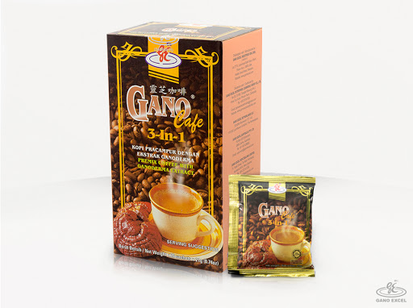

Cafe 3 en 1

Registro Invima N° SD2014-0003291
WPor la compra de Gano Cereal recibe: Volumen Personal 16 (PV). Volumen Comisional 12 (CV)..
comparWPor la compra de Gano Cereal recibe: Volumen Personal 16 (PV). Volumen Comisional 12 (CV)..
compar